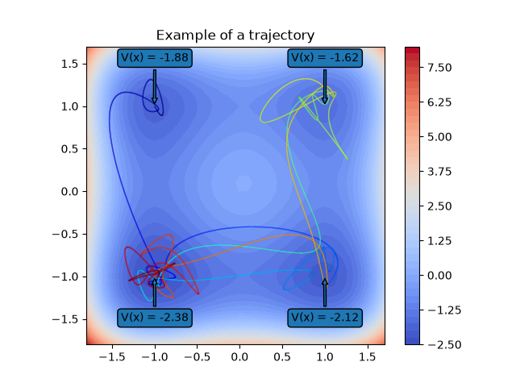

Note
Go to the end to download the full example code.
Asymmetric Quadruple-well¶
Example for the deeptime.data.quadruple_well_asymmetric() dataset.

8 import numpy as np
9 import scipy
10 import matplotlib.pyplot as plt
11 from matplotlib.collections import LineCollection
12
13 from deeptime.data import quadruple_well_asymmetric
14
15 system = quadruple_well_asymmetric(n_steps=10000)
16 traj = system.trajectory(np.array([[-1, 1]]), 70, seed=36)
17
18 xy = np.arange(-1.8, 1.8, 0.1)
19 coords = np.dstack(np.meshgrid(xy, xy)).reshape(-1, 2)
20 V = system.potential(coords).reshape((xy.shape[0], xy.shape[0]))
21
22 fig, ax = plt.subplots(1, 1)
23 ax.set_aspect('equal')
24 ax.set_title("Example of a trajectory")
25
26 cb = ax.contourf(xy, xy, V, levels=50, cmap='coolwarm')
27
28 ax.annotate(f'V(x) = {system.potential([[1., 1.]]).squeeze():.2f}', xy=(1., 1.), xycoords='data',
29 xytext=(-30, 40), textcoords='offset points',
30 bbox=dict(boxstyle="round"), arrowprops=dict(arrowstyle='simple'))
31 ax.annotate(f'V(x) = {system.potential([[-1., -1.]]).squeeze():.2f}', xy=(-1., -1.), xycoords='data',
32 xytext=(-30, -40), textcoords='offset points',
33 bbox=dict(boxstyle="round"), arrowprops=dict(arrowstyle='simple'))
34 ax.annotate(f'V(x) = {system.potential([[-1., 1.]]).squeeze():.2f}', xy=(-1., 1.), xycoords='data',
35 xytext=(-30, 40), textcoords='offset points',
36 bbox=dict(boxstyle="round"), arrowprops=dict(arrowstyle='simple'))
37 ax.annotate(f'V(x) = {system.potential([[1., -1.]]).squeeze():.2f}', xy=(1., -1.), xycoords='data',
38 xytext=(-30, -40), textcoords='offset points',
39 bbox=dict(boxstyle="round"), arrowprops=dict(arrowstyle='simple'))
40
41 x = np.r_[traj[:, 0]]
42 y = np.r_[traj[:, 1]]
43 f, u = scipy.interpolate.splprep([x, y], s=0, per=False)
44 xint, yint = scipy.interpolate.splev(np.linspace(0, 1, 50000), f)
45
46 points = np.stack([xint, yint]).T.reshape(-1, 1, 2)
47 segments = np.concatenate([points[:-1], points[1:]], axis=1)
48 coll = LineCollection(segments, cmap='jet')
49 coll.set_array(np.linspace(0, 1, num=len(points), endpoint=True))
50 coll.set_linewidth(1)
51 ax.add_collection(coll)
52
53 fig.colorbar(cb)
Total running time of the script: (0 minutes 0.337 seconds)
Estimated memory usage: 733 MB